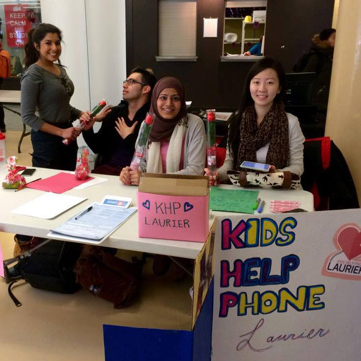
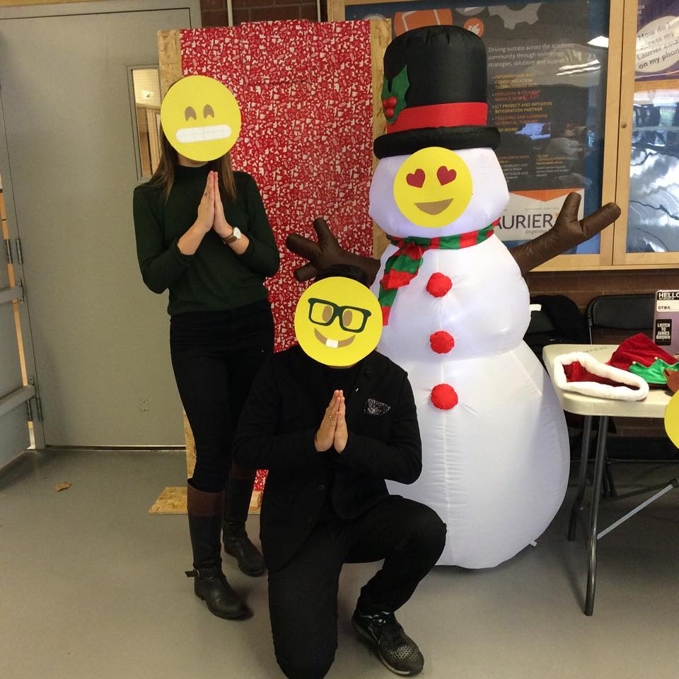

Executive Positions
The following are some of the events that I've hosted along with the rest of the executive team of Kids Help Phone Laurier:
 Candy Grams Event
One of our highly successful events is the Candy Grams event we held around Valentine's Day. We set up a booth on campus where students can come and order candy grams to send to their loved ones. The revenues earned from this event was close to 3 times our costs. As a non-profit organization, we donate all our profits to Kids Help Phone. In addition, we helped spread the love on campus and also raise awareness for mental health.
 Winter Holidays Event
This is another fun event we held in December to raise awareness for mental health while giving students a chance to relax before exams approach. Many expressions were available for students to hold over their faces or stick on the life-size snowman. This was done so that people who do not always show how they feel can have an outlet for that expression. Kids Help Phone Laurier works towards eliminating the social stigma attached to mental health.
Executive Duties
After four months as a Finance Executive, I was promoted to the Vice President of Finance position and have held it since January 2015. I efficiently keep track of the money earned from events and make the deposits and reimbursements for members. I also assist with determining pricing, budget planning, and processing expense forms. I also attend weekly meetings to generate ideas and plan for the execution of our upcoming events!